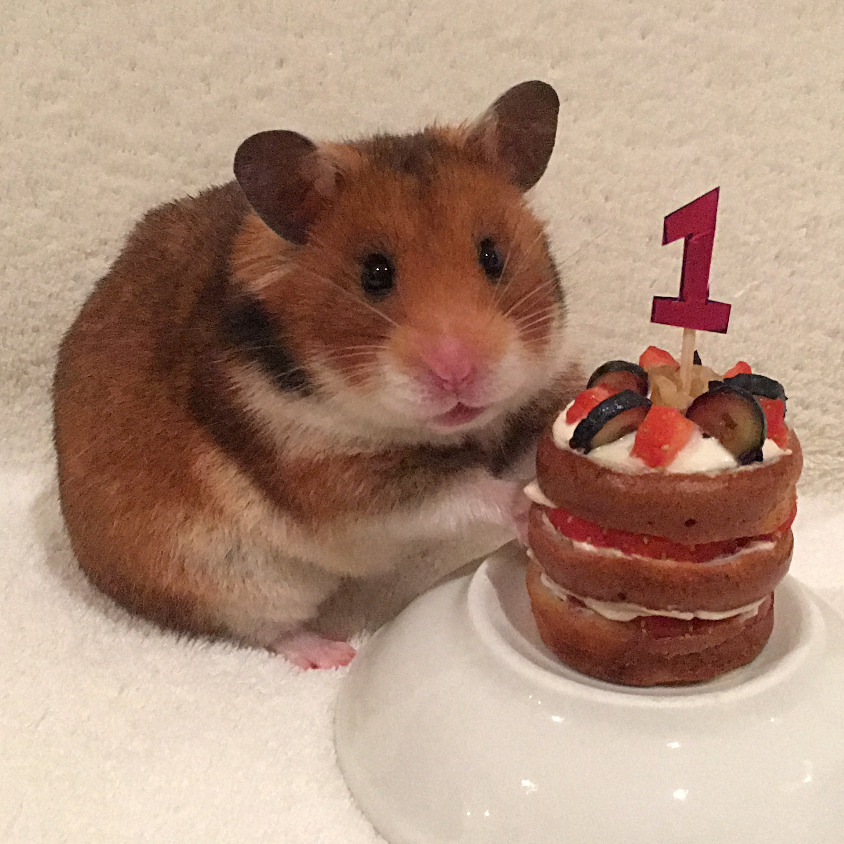

Hamster's 1st Birthday Cake

Description
This is a hamster-friendly cake that you can make for your hamster's first birthday!
Ingredients
- fruits cut into hamster-friendly size
- a pinch of flour
- sufficient water
- the soul of a small spider
Steps
- Stir flour and water to make dough.
- Bake in oven for 5 mins at 180 degrees celsius.
- Garnish with fruits and soul of a small spider.
Return to Main Page
Return to Top